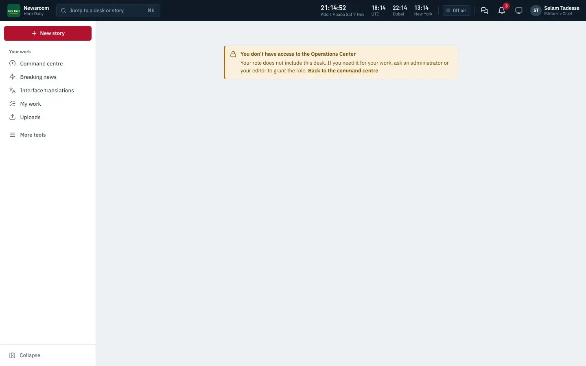

Questions buyers, readers, journalists, administrators and IT staff ask, with clear answers; symptom-by-symptom troubleshooting; and every message the system can show.
Note
Background that helps you understand what the system is doing.
Tip
A faster or better way to do something.
Important
Something that can cost you work, money or trust if you skip it.
Danger
A step that cannot be undone, or that can expose data.
Who can do this
The roles or permissions a task needs.
Steps
Text in monospace is something you type or see exactly. Bold names a button, field or menu. Blue links jump to another place in this book; in the PDF they are clickable, and so is every line of the contents and the index. Screenshots show the example outlet Horn Daily in green; your system shows your own name, logo, colour and languages.
| Vol. | Title | For |
|---|---|---|
| 01 | Product Bible | buyers, owners, managers and everyone new to the product |
| 02 | Reader Guide | readers, help-desk staff and audience teams |
| 03 | Newsroom User Manual | reporters, editors and newsroom staff |
| 04 | Advanced User Manual | senior editors, producers, audience and commercial leads |
| 05 | Administrator Manual | system administrators and technical owners |
| 06 | Installation and Operations Manual | IT, hosting and operations staff |
| 07 | Advanced Technical Manual | developers, integrators, architects and security reviewers |
| 08 | Training Manual | trainers, new staff and team leads |
| 09 | FAQ and Troubleshooting | everyone, and the help desk |
| 10 | sham.et Store and Licensing Manual | customers buying licences and Sham operators |
| 11 | Commercial and Legal Pack | buyers, procurement, legal and sales teams |
© 2026 Sham Software Systems Development General Trading PLC. All rights reserved. This documentation is supplied to licensed customers of Sham MediaOS and may be copied for their internal training and use. Product names of third parties (for example Stripe, Google Play, the App Store, Microsoft Store, LiveKit, Jitsi, Cloudflare) belong to their owners and are used only to describe how Sham MediaOS works with them. Features marked as optional need a separate account with that provider; Sham MediaOS does not include those services.
Short answers to the questions buyers, readers, journalists, administrators and IT staff ask most. Each answer points to the volume with the full explanation.
A complete system for a news organisation: newsroom, multilingual website, reader apps, newsletters, podcasts, live coverage, radio and television production, reader revenue, advertising, administration and backups, installed on the outlet's own server under its own brand. See the Product Bible.
Sham Software Systems Development General Trading PLC, Addis Ababa, Ethiopia (sham.et).
No. The website is one part. Most of the work happens in the newsroom, where stories are planned, written, checked, translated and approved, and from where they go to the website, apps, newsletters, social platforms and broadcast.
Twenty languages are ready, including English, Amharic, Afaan Oromoo, Tigrinya, Somali, Arabic, Kiswahili, French, Chinese, Turkish, Spanish, Afar, Sidama, Agew, Anuak and Nuer. Right-to-left scripts and Ethiopic typography are supported fully. Interface texts of new languages can be reviewed by the outlet's own staff.
Yes. Name, short name, tagline, legal name, contact address, colour and logo are set at installation and can be changed in Administration → Brand. Readers do not see the Sham name unless you choose to show it.
Yes. Pages are light, a separate light edition works on 2G, pages can be read offline after a first visit, and SMS and USSD reach basic phones.
Resilience mode points readers to mirrors, alternative addresses and messaging channels, serves light pages and lets the newsroom keep publishing from wherever staff have a connection. See the Installation and Operations Manual, runbook 5.
Yes. Pages work with screen readers and keyboards, images carry alternative text, videos can carry captions, and colours meet contrast guidelines. The readiness check reminds journalists to add alternative text.
Starter for a small single-edition outlet (5 staff, 3 languages); Professional for a growing digital outlet (25 staff, 10 languages, paywall, apps, AI desk, analytics, podcasts, elections); Broadcast for radio and TV (75 staff, 15 languages, 3 studios); Enterprise for groups (500 staff, single sign-on, several brands, legal holds, audit export); Global on quotation. See the Commercial and Legal Pack.
Yes. A new installation runs 14 days with Professional features.
Online at the sham.et store, by card or bank transfer, or through a quotation from Sham for larger editions. The licence key is e-mailed when payment is confirmed. See the sham.et Store and Licensing Manual.
One installation, for the edition, domains and period named in it, with updates until the end date of updates.
Yes. Ask Sham to release the licence from the old installation, then install it on the new server; the first check-in binds it to the new installation.
For 14 days the newsroom works with a banner. After that the newsroom becomes read-only until a new key is installed. The public website, apps and feeds keep running throughout.
No. The daily check-in sends the licence identifier, the installation identifier, the domains and the version, with counts such as staff seats used. Never stories, readers or personal data.
The installation must check in at least once every 30 days. Between check-ins it works normally. Offline licences for closed networks are available on request.
Yes, until the end date of updates in your licence. Updates are signed by Sham; the system checks for them daily and shows when one is available.
The software is licensed, not sold. The Software Licence Agreement in the Commercial and Legal Pack explains what you may and may not do. Ask Sham if your organisation needs special arrangements for audits.
For a launch: 8 vCPU, 16 GB memory and 160 GB NVMe disk on Ubuntu 24.04, with off-site backups. A pilot can start with 4 vCPU and 8 GB. See the Installation Guide.
Not recommended. Shared hosting usually lacks PostgreSQL, Redis, queue workers and FFmpeg. A small cloud server costs little more and works properly.
PostgreSQL 16 or newer (17 in the Docker kit) with the extensions pg_trgm, unaccent and citext. MySQL is not supported.
Yes. One command installs with Docker on Ubuntu 24.04; Kubernetes manifests are provided for larger installations.
Yes. Any server that meets the requirements works, in a local data centre or with any cloud provider.
Usually under an hour for the one-command install on a prepared server with DNS in place, plus time for your brand, licence and first editions.
Yes, for sending: an SMTP account or a transactional e-mail service in your name, so that sign-in e-mails and newsletters arrive.
The database and media are backed up every night, encrypted and copied off-site. Restores need approval by a second administrator. Test a restore every month.
Run the update command from the Installation Guide, or apply the signed update package. Take a backup first; the updater keeps the previous release for rollback.
Use Forgot password on the sign-in page. If you also lost your two-step device, use a recovery code or ask your administrator to reset your two-step sign-in.
Your role does not include that permission, or your role is limited to another desk or edition. Ask your desk chief or administrator.
Either you do not have the publish permission for that desk and edition, or an approval chain requires approvals first, or the licence has lapsed and the newsroom is read-only.
One person edits at a time; others see who has it open. Notes and queries can be added by others while it is being edited.
Yes, every few seconds. Ctrl+S saves at once.
Open Versions in Story Studio, compare, and restore the one you want.
Choose Schedule and set a date and time in the edition's time zone. It publishes even if nobody is signed in.
An update adds new information. A correction fixes an error and is listed publicly on the corrections page.
Yes, up to 8 GiB per file, in resumable pieces.
In the Reporter app, yes. In the browser, the newsroom needs a connection.
Request a translation to other editions from Story Studio; translators work side by side on the Translation desk; an edition editor approves.
Only if your outlet switches on a provider, and only as a draft that a person must change and approve.
Editors with the breaking permission. Your outlet may require a second editor to confirm.
Yes, per story, per section or for the whole site.
Only if the outlet switches it on. The AI desk (Professional and above) offers summaries, headline ideas, translation drafts, transcription, captions, archive search and verification aids.
The outlet chooses: a cloud provider under its own account, or a model on its own server. Keys are stored encrypted.
Sham MediaOS does not send content anywhere unless you switch a provider on. Check the provider's terms for how they treat data sent to them.
Never.
Stripe (cards), PayPal, Chapa, telebirr, ArifPay and bank transfer, each through the outlet's own merchant account.
No. Payments go to your merchant accounts.
No. Card details are handled by the payment provider.
The benefit it paid for ends: a refunded membership payment ends the membership period it bought.
Yes: advertisers, campaigns, placements and reports, with ads.txt support.
Not unless you add them. The built-in analytics measure audiences without following readers across sites.
Yes, with App Studio (Professional and above). The apps carry your name and are published under your own store accounts.
The stores charge their own fees: Apple about 99 US dollars per year, Google a one-time 25 US dollars, Microsoft a small one-time fee for companies. Store developer accounts must be opened by the outlet itself.
Usually one to seven days for a first app; updates are faster.
For roles that can publish, administer or see personal data, yes, when the role is marked to require it (the default for sensitive roles).
Yes, with single sign-on (Enterprise): Google Workspace, Microsoft Entra ID and any SAML 2.0 provider.
Administrators with the audit permission. Entries cannot be changed silently: each is linked to the previous one by a hash.
On your server, in the country you choose. Services that send data abroad are off until you switch them on.
Readers can download or delete their data themselves. Requests by letter are recorded under Administration → Compliance.
Your contract or store order names the support level. Contact Sham support with your customer reference, the version (Administration → System health) and what you saw.
The time it happened, the page address, the exact message (a screenshot helps), the steps that lead to it, your version and, for server problems, the relevant lines of the log. Never send passwords, keys or the .env file.
Training is offered with every roll-out; the Training Manual is the course book.
Find the symptom, check the likely causes in order, and apply the fix. Who says who can fix it: U any user, E an editor, A an administrator, IT someone with server access.
| Symptom | Likely cause | Fix | Who |
|---|---|---|---|
| The e-mail or password is not correct | Typing error, Caps Lock, old password | Type again; use Forgot password | U |
| Too many attempts, try again later | Sign-in protection after repeated failures | Wait the time shown; then use Forgot password | U |
| Authentication code rejected | Phone clock wrong; code already used; code expired | Set the phone's time to automatic; wait for the next code | U |
| Lost the phone with the authenticator | — | Use a recovery code; then set up two-step sign-in again | U, A |
| No recovery codes either | — | Administrator resets two-step sign-in after checking your identity | A |
| Passkey button does nothing | Browser without passkey support or blocked prompt | Update the browser; allow the prompt; use password and code | U |
| Sign in again to continue when adding a passkey | Sensitive action needs a sign-in within 15 minutes | Sign in again, then add the passkey | U |
| Invitation link does not work | Used or expired | Ask the administrator to send a new invitation | A |
| Single sign-on fails | Account not linked, or provider settings changed | Check the SSO settings and the user's e-mail at the provider | A |
| Symptom | Likely cause | Fix | Who |
|---|---|---|---|
| Cannot edit a story | Someone else has it open, or it is submitted | See who has it; ask them to close it; wait to be returned | U |
| Publish disabled | Approval chain not complete; missing permission; readiness errors | Check approvals; fix red readiness items; ask for the permission | E |
| Newsroom is read-only, banner about the licence | Licence expired, check-in overdue, wrong domain | See runbook 2; install a valid key | A |
| Scheduled story did not publish | Scheduler not running | Start the scheduler; publish by hand meanwhile | IT |
| Story published but not on the front page | Front page layout does not include it | Place it in Front page layouts | E |
| Story not in search results on the site | Search index catching up | Wait a few minutes; if it persists, check the queue | IT |
| Photo looks cropped badly | Focal point not set | Set the focal point in the media item | U |
| Translation not visible in the other edition | Not yet approved | Edition editor approves it | E |
| Correction does not show the note | Story was edited instead of corrected | Use Add correction | E |
| Page not found for a story in another language | No version in that edition | Request a translation | E |
| Symptom | Likely cause | Fix | Who |
|---|---|---|---|
| Upload stops | Connection dropped | It resumes; keep the page open or reopen it | U |
| File too large | Over the limit (8 GiB video) | Compress or cut the file | U |
| Video stays processing | Media queue stopped or FFmpeg missing | Restart workers; check System health | IT |
| No thumbnail | Processing failed | See the media item's error; retry processing | A |
| Audio has no waveform | Processing not finished | Wait; check the media queue | IT |
| Symptom | Likely cause | Fix | Who |
|---|---|---|---|
| Site shows an old version of a page | Caching | It refreshes within minutes; publishing again refreshes it at once | E |
| Wrong language opens | Saved language choice on the device | Choose the language in the menu | U |
| Fonts look wrong in Amharic or Tigrinya | Very old browser | Update the browser | U |
| Push notifications do not arrive | Not allowed in browser or phone settings | Allow notifications; choose topics | U |
| Sign-in e-mail does not arrive | Spam folder; mail service down; domain records missing | Check spam; check System health → Mail; set SPF, DKIM, DMARC | U, A |
| App shows no new stories | No connection; app outdated | Pull down to refresh; update the app | U |
| Symptom | Likely cause | Fix | Who |
|---|---|---|---|
| Issue not sent | Not scheduled; queue stopped | Check status; restart workers | E, IT |
| Many bounces | Old or bought list | Remove bad addresses; never import lists without consent | E |
| Messages land in spam | SPF, DKIM or DMARC missing; high complaints | Set domain records; send less, to engaged readers | A |
| Subscriber says they never subscribed | Someone else used their address | Double opt-in prevents this; check the confirmation record | E |
| Symptom | Likely cause | Fix | Who |
|---|---|---|---|
| Reader paid but is not a member | Provider confirmation delayed or webhook not reaching the server | Check the payment in Revenue; check the provider's webhook settings and the server's public address | A |
| Bank transfer member not active | Transfer not recorded | Record the transfer on the order | A |
| Payment method missing on Support page | Not connected or switched off | Connect it in Integrations | A |
| Refunded reader still has access | Refund not yet notified | Use Check with the provider on the order; access ends when the refund is confirmed | A |
| Symptom | Likely cause | Fix | Who |
|---|---|---|---|
| Remote guest cannot join | Browser blocked camera or microphone; network blocks the media ports | Allow devices; try another network; check the gateway's ports | U, IT |
| Echo during interviews | Guest without headphones | Ask the guest to use headphones | U |
| Stream not reaching a platform | Wrong or expired stream key | Update the key in Destinations | A |
| Graphics not visible | Overlay not loaded as browser source | Reload the overlay in the mixer | U |
| Live blog not updating for readers | Reader's connection or browser blocks live updates | It falls back to periodic refresh; ask the reader to reload | U |
| Symptom | Likely cause | Fix | Who |
|---|---|---|---|
| System health shows the database red | Database stopped or full disk | Start it; free disk | IT |
| Queues grow and do not shrink | Workers stopped | Restart workers | IT |
| Failed jobs increase | Outside service key expired; bug | Read the error; fix; retry | A, IT |
| Certificate warning in browsers | Certificate expired | Renew; check automatic renewal | IT |
| Disk almost full | Logs, media growth, old releases | Rotate logs; move media to object storage; remove old releases | IT |
| Backup failed | Disk, credentials for off-site storage, or permissions | Read the backup log; fix; run Back up now | A, IT |
| Audit chain broken | A row was changed outside the application | Treat as a security incident; contact Sham | A |
| Update not offered | End of updates in licence reached; server cannot reach the update service | Renew; check outbound HTTPS | A, IT |
When you contact Sham support, include:
The time, the page address and the exact message (a screenshot).
What you did just before.
Never send secrets
Do not send passwords, recovery codes, licence keys, API keys or the .env file to anyone, including Sham support.
The system explains every refusal in plain words. This chapter collects 852 messages that the server can return, grouped by area, so that a help desk can search for the exact wording a user reports. The kind tells you the HTTP status family: Not allowed (403), Not found (404), Conflict (409), Check the form (422), Slow down (429), Unavailable (503).
| Kind | Message |
|---|---|
| Conflict | SELF_MODIFICATION |
| Not allowed | You cannot grant a role with permissions you do not hold in that scope. |
| Check the form | A global grant cannot carry a scope target. |
| Check the form | Invalid BCP-47 code. |
| Check the form | That role does not exist in this organization. |
| Check the form | The default edition is always live. |
| Check the form | The scope target does not exist in this organization. |
| Kind | Message |
|---|---|
| Not allowed | Only administrators manage keys and connections. |
| Check the form | Some values do not look right. Copy them again from the provider. |
| Kind | Message |
|---|---|
| Conflict | ADVERTISER_EXISTS |
| Conflict | CAMPAIGN_NO_CREATIVES |
| Conflict | EDIT_CONFLICT |
| Check the form | A creative needs an image or a headline. |
| Check the form | A start date is required. |
| Check the form | Display placements need an image. |
| Check the form | The click URL must be a public HTTPS address. |
| Check the form | The creative image must be an uploaded image. |
| Check the form | The end must be after the start. |
| Check the form | Unknown advertiser. |
| Check the form | Unknown placement. |
| Kind | Message |
|---|---|
| Conflict | ALREADY_DECIDED |
| Conflict | INVALID_STATE |
| Not allowed | You are not allowed to use AI assistance for this story. |
| Not allowed | You are not allowed to use AI assistance here. |
| Check the form | Translation needs a different target language. |
| Kind | Message |
|---|---|
| Conflict | BUILD_NOT_READY |
| Conflict | EDIT_CONFLICT |
| Conflict | SIGNING_EXISTS |
| Not allowed | App Studio needs the appstudio.manage permission (System Administrator). |
| Not found | STORE_ACCOUNT |
| Check the form | Build numbers only go up: stores refuse a number they have seen. |
| Check the form | Choose an image from the media library. |
| Check the form | Listings are keyed by edition language code. |
| Check the form | Send the Android App Bundle (.aab). |
| Check the form | Some values are missing or do not look right. Copy them again from the store. |
| Check the form | The .p12 file could not be opened with this password. |
| Check the form | The .p12 file could not be read. |
| Check the form | The .p12 file has no certificate with its private key. |
| Check the form | The file arrived damaged (checksum differs). Upload it again. |
| Check the form | The keystore could not be opened with this password. |
| Check the form | The keystore file could not be read. |
| Check the form | The two apps need different store identities. |
| Check the form | This is not a Java keystore (.jks, .keystore) or PKCS#12 file (.p12, .pfx). |
| Check the form | Unknown build runner. |
| Check the form | Upload the Windows package made by PWABuilder (.msixbundle, .msix or .msixupload). |
| Kind | Message |
|---|---|
| Conflict | PUBLISHED_CONTENT_PROTECTED |
| Not allowed | You are not allowed to create articles here. |
| Check the form | That version has no story text to restore. |
| Check the form | Unsupported language. |
| Kind | Message |
|---|---|
| Not found | ARTICLE_AUDIO |
| Kind | Message |
|---|---|
| Conflict | ASSIGNMENT_CLOSED |
| Conflict | EDIT_CONFLICT |
| Conflict | INVALID_TRANSITION |
| Not allowed | Editing the story budget needs the planning permission. |
| Not allowed | You cannot move assignments to that desk. |
| Not allowed | You cannot plan stories for that edition. |
| Check the form | Assign a reporter first. |
| Check the form | Unknown desk. |
| Check the form | Unknown edition. |
| Check the form | Use a date like 2026-10-19. |
| Kind | Message |
|---|---|
| Conflict | COMMENTS_CLOSED |
| Conflict | INVALID_STATE |
| Not allowed | This account is not active. |
| Not allowed | You cannot comment at the moment. |
| Check the form | A blocked term has 2 to 100 characters. |
| Check the form | Choose a display name before commenting. |
| Check the form | Enter the mobile number in international format. |
| Check the form | Give a reason (it is kept in the moderation log). |
| Check the form | Please choose a different display name. |
| Check the form | Readers under 16 sign up by e-mail, with a parent's consent. |
| Check the form | Record the reason for the decision. |
| Check the form | Sign-in by SMS is not available for this edition. |
| Check the form | That comment was not found in this edition. |
| Check the form | That comment was not found. |
| Check the form | This code is wrong or has expired. |
| Check the form | This consent link is invalid or has expired. |
| Check the form | This sign-in could not be verified. Please try again. |
| Check the form | This sign-in link is invalid or has expired. |
| Check the form | This sign-in method is not available. |
| Check the form | Unknown action or scope. |
| Check the form | Your Google or Apple account has no confirmed e-mail address. Sign in by e-mail instead. |
| Check the form | Your comment breaks our community guidelines and was not posted. |
| Check the form | Your comment is empty. |
| Kind | Message |
|---|---|
| Conflict | RESTORE_PENDING |
| Conflict | RESTORE_STATE |
| Not allowed | A different administrator must approve or reject a restore you requested (four-eyes). |
| Check the form | Choose a backup to verify. |
| Kind | Message |
|---|---|
| Check the form | Body must contain a list of blocks. |
| Check the form | The article body contains invalid blocks. |
| Check the form | Too many blocks. |
| Kind | Message |
|---|---|
| Not allowed | Changing the brand needs the settings.manage permission. |
| Kind | Message |
|---|---|
| Conflict | ALREADY_BREAKING |
| Conflict | EDIT_CONFLICT |
| Conflict | NOT_PUBLISHED |
| Not allowed | Confirm your two-step verification before sending a breaking alert. |
| Not allowed | Sending breaking alerts needs the breaking-news permission. |
| Not allowed | You may not send breaking alerts in this edition. |
| Not found | BREAKING_ALERT |
| Check the form | That live event is not in this edition. |
| Check the form | Unknown edition. |
| Kind | Message |
|---|---|
| Conflict | CHANNEL_EXISTS |
| Conflict | COMMAND_EXPIRED |
| Conflict | COMMAND_STATE |
| Conflict | CONSENT_REQUIRED |
| Conflict | CONTRIBUTION_CLOSED |
| Conflict | DEVICE_NOT_CONTROLLABLE |
| Conflict | DEVICE_NO_CHANNEL |
| Conflict | DEVICE_UPLOADER_INVALID |
| Conflict | EDIT_CONFLICT |
| Conflict | ENGINE_UNSUPPORTED |
| Conflict | GRAPHICS_CONFLICT |
| Conflict | PAIRING_CODE_USED |
| Conflict | PRESETS_FULL |
| Conflict | PROGRAM_EXISTS |
| Conflict | RELAY_DISABLED |
| Conflict | RESTREAM_NOT_CONFIGURED |
| Conflict | RESTREAM_NOT_CONNECTED |
| Conflict | RUNDOWN_ARCHIVED |
| Conflict | RUNDOWN_FULL |
| Conflict | RUNDOWN_ITEMS_CHANGED |
| Conflict | RUNDOWN_NOT_ON_AIR |
| Conflict | RUNDOWN_NOT_READY |
| Conflict | RUNDOWN_STATE |
| Conflict | SLATE_NOT_ACTIVE |
| Conflict | SLOT_HAS_RUNDOWN |
| Conflict | SLOT_OVERLAP |
| Conflict | STUDIO_BOOKED |
| Conflict | STUDIO_INACTIVE |
| Conflict | STUDIO_NAME_TAKEN |
| Conflict | TRANSFER_NODE_EXISTS |
| Conflict | USE_DUMP_CONTROL |
| Not allowed | Managing a studio with no default channel needs broadcast management for every edition. |
| Not allowed | Only a MediaOS Studio Bridge registers for file transfer. |
| Not allowed | Only a rundown approver can approve items. |
| Not allowed | Only a rundown approver can mark a rundown ready for air or take it back to draft. |
| Not allowed | This Syncthing device is registered to another studio bridge. |
| Not allowed | This item is approved and locked. Ask a rundown approver to change it. |
| Not allowed | This item is approved and locked. Ask a rundown approver to remove it. |
| Not found | CONTRIBUTION |
| Not found | PAIRING_CODE |
| Not found | RUNDOWN_ITEM |
| Check the form | A booking can be at most 24 hours long. |
| Check the form | A booking must end after it starts. |
| Check the form | A slot can be at most 24 hours long. |
| Check the form | A slot must end after it starts. |
| Check the form | Ask for at most two months of bookings at a time. |
| Check the form | Choose a period of at most 120 days. |
| Check the form | Choose someone who works on this channel's edition (they need broadcast access there). |
| Check the form | Devices may report stream, recording, graphics and note events only. |
| Check the form | Give the air date and planned start time (or book the rundown into a guide slot). |
| Check the form | Give the booking a title. |
| Check the form | Give the start and end, or choose a programme slot. |
| Check the form | Give the studio a name. |
| Check the form | Guest sessions cannot be linked to an investigation story before legal clearance. Confidential-source interviews must never use remote contribution links. |
| Check the form | Meld Multi is configured inside Meld Studio: store only its watch and embed links here. |
| Check the form | No destination of this channel can be fed by the relay yet. Add an RTMP or SRT destination with its stream key. |
| Check the form | Playback values must be text. |
| Check the form | Report done or failed. |
| Check the form | Say briefly why programme is being dumped (it is recorded). |
| Check the form | Some destinations cannot be fed by the relay. |
| Check the form | Templates and earlier shows can only be reused on their own channel. |
| Check the form | That bureau does not belong to this organisation. |
| Check the form | That destination has no ingest address to stream to. |
| Check the form | That destination is not an active destination of this studio's channel. |
| Check the form | That does not look like a |
| Check the form | That guest session belongs to another channel. |
| Check the form | That item is not in this rundown. |
| Check the form | That live event is not in this channel's edition. |
| Check the form | That programme slot does not exist. |
| Check the form | That rundown is not on the booked channel. |
| Check the form | That rundown is not on this channel. |
| Check the form | That rundown item is not on this channel. |
| Check the form | That slot is not on this channel's guide. |
| Check the form | The ingest address is not valid for this platform. |
| Check the form | The invite link must be an HTTPS address. |
| Check the form | The item belongs to another rundown. |
| Check the form | The item to insert after is not in this rundown. |
| Check the form | The linked story has no version in this channel's edition. |
| Check the form | The logo must be an image from the media library. |
| Check the form | The media must come from the media library. |
| Check the form | The podcast show must belong to this channel's edition. |
| Check the form | The poster must be an image from the media library. |
| Check the form | The producer must be an active member of staff. |
| Check the form | The programme belongs to another channel. |
| Check the form | The slot is on another channel. |
| Check the form | This Restream sign-in link is invalid or has expired. Start the connection again. |
| Check the form | This destination is not a Restream connection. |
| Check the form | This destination needs an ingest URL. |
| Check the form | This playback address is not allowed. |
| Check the form | This story belongs to an investigation that has not been legally cleared, so it cannot go into a running order yet. |
| Check the form | Unknown channel kind. |
| Check the form | Unknown consent method. |
| Check the form | Unknown device kind. |
| Check the form | Unknown fields for |
| Check the form | Unknown fields for the |
| Check the form | Unknown graphic kind for a rundown item. |
| Check the form | Unknown graphics layer. |
| Check the form | Unknown platform. |
| Check the form | Unknown playback fields. |
| Check the form | Unknown provider. |
| Check the form | Unknown rundown status. |
| Check the form | Unknown status. |
| Check the form | Unknown studio command. |
| Check the form | Unknown timezone. |
| Check the form | Unknown transfer role. |
| Check the form | Use a date like 2026-10-19. |
| Check the form | Watch and embed links must be HTTPS. |
| Check the form | syncthing_device_id must be a Syncthing device ID. |
| Kind | Message |
|---|---|
| Not found | RUNDOWN_ITEM |
| Kind | Message |
|---|---|
| Check the form | Ask for at most 31 days at a time. |
| Kind | Message |
|---|---|
| Conflict | EDIT_CONFLICT |
| Not found | CALENDAR_EVENT |
| Check the form | Choose a range of at most |
| Check the form | The end must be after the start. |
| Check the form | Unknown edition. |
| Kind | Message |
|---|---|
| Conflict | CALLOUT_CLOSED |
| Conflict | FIELDS_IN_USE |
| Conflict | INVALID_TRANSITION |
| Conflict | SUBMISSION_PURGED |
| Not found | CALLOUT_FILE |
| Check the form | A callout can ask for files in at most |
| Check the form | A callout has between 1 and |
| Check the form | A callout needs its question and the consent text readers agree to. |
| Check the form | A choice question needs 2 to 20 options. |
| Check the form | A file was already sent. Please choose it again. |
| Check the form | Another callout of this edition already uses this address. |
| Check the form | Assign it to someone who runs callouts for this edition. |
| Check the form | Every question needs a label. |
| Check the form | File questions need the malware scanner on this server (JMN_CLAMAV_HOST or JMN_CLAMAV_SOCKET). |
| Check the form | Give an email address or a phone number so a journalist can reach you. |
| Check the form | Give the callout a title. |
| Check the form | Invalid question. |
| Check the form | Keep answers between 30 and 730 days. |
| Check the form | Please answer at least one question. |
| Check the form | Please check your answers. |
| Check the form | Say why this answer must be kept beyond the retention period (e.g. the story it is used in). |
| Check the form | Set a closing date in the future before opening the callout. |
| Check the form | That story was not found. |
| Check the form | The callout must close after it opens. |
| Check the form | The file could not be read. Please choose it again. |
| Check the form | This question does not take files. |
| Check the form | This reader did not agree to be contacted. |
| Check the form | Two questions share the same key. |
| Check the form | Unknown edition. |
| Check the form | Unknown question type. |
| Check the form | Unknown status. |
| Check the form | Write the consent text readers agree to (what MediaOS does with their answer, and for how long). |
| Check the form | Write the question readers are asked. |
| Kind | Message |
|---|---|
| Conflict | STALE_VERSION |
| Not allowed | Only administrators switch capabilities. |
| Not found | CAPABILITY_PROVIDER |
| Check the form | One provider is always active here: switch another one on instead. |
| Check the form | Only a fallback chain has an order. |
| Check the form | The order names an unknown provider or one twice. |
| Check the form | This is set up in |
| Kind | Message |
|---|---|
| Check the form | Unknown edition. |
| Kind | Message |
|---|---|
| Check the form | Unknown edition. |
| Check the form | Unknown status. |
| Kind | Message |
|---|---|
| Check the form | Choose a period of at most 400 days. |
| Check the form | Unknown edition. |
| Kind | Message |
|---|---|
| Conflict | ALREADY_EXTENDED |
| Conflict | COMPLAINT_OPEN |
| Conflict | ERASURE_NOT_RUN |
| Conflict | IDENTITY_NOT_VERIFIED |
| Conflict | INVALID_STATE |
| Conflict | INVALID_TRANSITION |
| Conflict | LICENCE_EXISTS |
| Conflict | RETENTION_HOLD |
| Conflict | TERMS_CHANGED |
| Conflict | WRONG_REQUEST_TYPE |
| Not allowed | Changing the record of processing needs an organisation-wide compliance role. |
| Not allowed | This register needs an organisation-wide |
| Not found | PROCESSING_ACTIVITY |
| Check the form | Awareness must be between detection and now. |
| Check the form | Describe the safeguards for transfers outside Ethiopia. |
| Check the form | Give a reason and a new deadline after the current one (at most 60 days later). |
| Check the form | Give the reason for refusing (at least 10 characters). |
| Check the form | Licensee, licence type and number are required. |
| Check the form | Publish the terms page of at least one edition first (Pages → Terms). |
| Check the form | Record the notice to ECA before closing the breach. |
| Check the form | Record the notice to the people affected, or the exemption, before closing. |
| Check the form | Record what was done for the person. |
| Check the form | Record why the people affected need not be told (Art. 44 exemption). |
| Check the form | That channel was not found. |
| Check the form | That is not a phone number. |
| Check the form | That item was not found. |
| Check the form | That licence was not found. |
| Check the form | That person was not found. |
| Check the form | That preservation order is not active. |
| Check the form | That time must be between detection and now. |
| Check the form | The date received must be within the last year and not in the future. |
| Check the form | The expiry date must be on or after the issue date. |
| Check the form | The filing date must be between the change and today. |
| Check the form | The legal minimum for this is |
| Check the form | The licence document must be a PDF or image from the media library. |
| Check the form | The notice to ECA was after 72 hours: record the reasons for the delay (Art. 43(2)). |
| Check the form | Unknown JTI clause. |
| Check the form | Unknown edition. |
| Check the form | Unknown fields. |
| Check the form | Unknown kind of item. |
| Check the form | Unknown licence type. |
| Check the form | Unknown request type. |
| Check the form | Unknown status. |
| Kind | Message |
|---|---|
| Check the form | Say which comment or address the notice is about. |
| Check the form | Unknown edition. |
| Kind | Message |
|---|---|
| Not allowed | This account is not active. |
| Kind | Message |
|---|---|
| Conflict | CONTRIBUTOR_ERASED |
| Conflict | CONTRIBUTOR_UNAVAILABLE |
| Conflict | DECLARATIONS_MISSING |
| Conflict | REVISION_CLOSED |
| Conflict | REVISION_PENDING |
| Conflict | SUBMISSION_LOCKED |
| Conflict | TOO_MANY_PITCHES |
| Not allowed | This account is not active. |
| Not allowed | This edition is not taking contributions at the moment. |
| Check the form | A fee needs an amount and a three-letter currency. |
| Check the form | Please confirm every declaration before submitting. |
| Check the form | Please describe the interest you are declaring. |
| Check the form | Please give the name readers will see. |
| Check the form | Please say whether and how you used AI tools. |
| Check the form | That editor cannot handle contributor pieces in this edition. |
| Check the form | The proposal is the same as the current text. |
| Check the form | These parts are added by editors: |
| Check the form | This sign-in link is invalid or has expired. |
| Kind | Message |
|---|---|
| Conflict | CORRECTION_IN_PROGRESS |
| Conflict | EDITION_EXISTS |
| Conflict | EDITION_LOCKED |
| Conflict | EDITION_NOT_PUBLISHED |
| Conflict | EDITION_NOT_READY |
| Conflict | STALE_EDITION |
| Check the form | Add at least one story before rendering. |
| Check the form | Choose a date between five years ago and tomorrow. |
| Check the form | Only stories published in this edition can go in its newspaper. |
| Check the form | Some stories are no longer published in this edition. Remove them and render again. |
| Check the form | The newspaper fonts are not installed on this server: |
| Kind | Message |
|---|---|
| Conflict | ARTICLE_NOT_EDITABLE |
| Conflict | EDIT_CONFLICT |
| Conflict | NOT_A_LIVE_BLOG |
| Conflict | NOT_A_TRANSLATION |
| Conflict | REVIEW_REQUIRED |
| Conflict | TRANSLATION_NOT_SUBMITTABLE |
| Conflict | TRANSLATION_OUTDATED |
| Not allowed | Changing disclosures on an approved or published story requires publishing rights. |
| Not allowed | You are not allowed to edit this article in |
| Check the form | Choose an active edition. |
| Check the form | Enter a reference title. |
| Check the form | Explain why this reference is being retired. |
| Check the form | The featured image must be an image from the media library. |
| Check the form | This story already has the maximum of 300 reference records. |
| Check the form | Translate the headline and the text before sending it for review. |
| Check the form | Unsupported or inactive language. |
| Kind | Message |
|---|---|
| Conflict | ALREADY_DECIDED |
| Conflict | CALL_PENDING |
| Conflict | INVALID_STATE |
| Conflict | NO_VERIFIED_RESULTS |
| Not allowed | A second person must approve a race call you proposed. |
| Not allowed | A second person must verify figures you entered. |
| Not allowed | Only the person who proposed a call can withdraw it. |
| Check the form | A poll has between 1 and 20 questions. |
| Check the form | A runoff needs at least two candidates. |
| Check the form | Add at least one question. |
| Check the form | Choose candidates of this contest. |
| Check the form | Explain the basis of the call (what the figures show, or who declared it). |
| Check the form | Give a title in at least one edition. |
| Check the form | Invalid voter token. |
| Check the form | Mark the correct answer of question |
| Check the form | Question ids must be unique. |
| Check the form | Say why the figures are rejected. |
| Check the form | The CSV needs the columns contest, area, candidate, votes, reporting_pct, as_of and source. |
| Check the form | The file could not be read. |
| Check the form | This contest has |
| Check the form | Unknown area. |
| Check the form | Unknown edition. |
| Check the form | Unknown parent area. |
| Check the form | Unknown party. |
| Check the form | Unknown question or option. |
| Kind | Message |
|---|---|
| Conflict | EDIT_CONFLICT |
| Conflict | EMAIL_DRAFT_OWNED |
| Conflict | EMAIL_NOT_PENDING |
| Conflict | EMAIL_OPEN_VERSION |
| Conflict | EMAIL_PENDING |
| Conflict | EMAIL_REQUIRED |
| Not allowed | A second person must approve: you wrote this version. |
| Not allowed | Approving email templates needs the email approval permission. |
| Not allowed | Editing email templates needs the email templates permission. |
| Not found | EMAIL_TEMPLATE |
| Not found | EMAIL_TEMPLATE_VERSION |
| Check the form | Choose a password you have not used here before. |
| Check the form | Say what needs to change. |
| Check the form | The template has errors. |
| Check the form | This is a machine-assisted translation. Confirm that it has been reviewed before approving it. |
| Check the form | This reset link is invalid or has expired. Ask for a new one. |
| Check the form | Your current password is not right. |
| Kind | Message |
|---|---|
| Conflict | NOT_PROMOTABLE |
| Conflict | NOT_TESTABLE |
| Conflict | NO_EDITION_TEXT |
| Conflict | TEST_RUNNING |
| Not allowed | Only someone who may publish this edition can let the winner replace the headline automatically. |
| Not allowed | Replacing the headline of a published story needs the right to publish this edition. |
| Not allowed | You cannot run headline tests in this edition. |
| Not found | HEADLINE_TEST |
| Check the form | A headline variant needs at least 10 characters. |
| Check the form | Add at least one alternative headline or card image. |
| Check the form | Choose a processed image from the media library. |
| Check the form | Choose an alternative headline to promote. |
| Check the form | Each variant must differ from the headline and from the other variants. |
| Check the form | Unknown edition. |
| Kind | Message |
|---|---|
| Conflict | C2PA_NOT_CONFIGURED |
| Conflict | EDIT_CONFLICT |
| Conflict | EVIDENCE_MISMATCH |
| Conflict | EVIDENCE_REQUIRED |
| Conflict | INVALID_STATE |
| Conflict | INVALID_TRANSITION |
| Not allowed | The checker cannot review their own fact check; a second fact checker must conclude it. |
| Not allowed | You are not allowed to do this for this language edition. |
| Not found | VERIFICATION_FILE |
| Check the form | A verdict is required. |
| Check the form | A written finding (at least 20 characters) is required. |
| Check the form | Unknown evidence item. |
| Kind | Message |
|---|---|
| Check the form | Invalid mode. |
| Kind | Message |
|---|---|
| Conflict | EDIT_CONFLICT |
| Not allowed | Maintaining the knowledge graph needs the entity.manage permission. |
| Not allowed | You cannot change the people, places and topics of this story. |
| Not allowed | You cannot write the |
| Check the form | A Wikidata ID looks like Q12345. |
| Check the form | An entity cannot be related to itself. |
| Check the form | An entity with that key already exists — open it instead of creating a duplicate. |
| Check the form | Another entity already has that Wikidata ID — it is probably the same thing. |
| Check the form | Another entity of this edition already uses that address. |
| Check the form | Authoritative links must be full https:// addresses. |
| Check the form | Link at most 40 entities to a story. |
| Check the form | Name the entity in at least one edition. |
| Check the form | One of the entities does not exist. |
| Check the form | That relation is already recorded. |
| Check the form | The name gives no usable address; set one. |
| Check the form | The name is too short. |
| Check the form | Unknown edition. |
| Kind | Message |
|---|---|
| Check the form | Unknown edition. |
| Kind | Message |
|---|---|
| Conflict | MFA_ALREADY_ENABLED |
| Conflict | MFA_SETUP_EXPIRED |
| Conflict | STALE_PROFILE |
| Not allowed | Offboarding is done by an administrator. |
| Not allowed | Publishing a profile and private staff details are managed by the staff desk ( |
| Not allowed | You can edit only your own staff profile. |
| Not found | SSO_PROVIDER |
| Check the form | Choose an active colleague to take over the work. |
| Check the form | The passkey could not be verified. |
| Check the form | The passkey request has expired. Try again. |
| Check the form | The verification code is invalid. |
| Check the form | This passkey is already registered. |
| Kind | Message |
|---|---|
| Conflict | NO_AUTHOR_ID |
| Conflict | STREAM_CLOSED |
| Conflict | STREAM_SOURCE_IN_USE |
| Not allowed | The relay key is not valid for this stream. |
| Not allowed | You cannot send questions at the moment. |
| Check the form | A Telegram group id is a number such as -1001234567890. |
| Check the form | Choose a display name before sending a question. |
| Check the form | Choose the SMS keyword listeners start their message with. |
| Check the form | Enter the id of the show's Telegram group. |
| Check the form | Send a JSON object or list. |
| Check the form | Send at most |
| Check the form | That word is an SMS command. Choose another keyword. |
| Check the form | That word is an edition's subscription keyword. Choose another. |
| Check the form | The question is empty. |
| Check the form | Unknown action. |
| Check the form | Unknown mark. |
| Check the form | Your question is empty. |
| Kind | Message |
|---|---|
| Conflict | ALREADY_LIVE |
| Conflict | ALREADY_MEMBER |
| Conflict | CLEARANCE_LOCKED |
| Conflict | CODENAME_TAKEN |
| Conflict | EDIT_CONFLICT |
| Conflict | INVALID_TRANSITION |
| Conflict | INVESTIGATION_CLOSED |
| Conflict | LEAD_REQUIRED |
| Conflict | NO_PUBLISHED_STORY |
| Conflict | SOURCE_PURGED |
| Not allowed | Only investigations editors can open an investigation. |
| Not allowed | Only the assigned legal reviewer can make this decision. |
| Not allowed | Only the lead or an editor of this investigation can add members. |
| Not allowed | Only the lead or an editor of this investigation can do this. |
| Not allowed | Only the legal reviewer can add legal opinions. |
| Not allowed | Only the source owner or the investigation lead can change a source. |
| Not allowed | Only the source owner or the investigation lead can purge a source. |
| Not allowed | Only the source owner or the investigation lead can see the access history. |
| Not allowed | The lead cannot clear their own investigation. |
| Not allowed | This source is critical-risk: only the journalist who holds the source can reveal the identity. |
| Not allowed | Viewers cannot add to the dossier. |
| Not allowed | You are not permitted to see confidential source identities. |
| Not allowed | You do not handle sources on this investigation. |
| Not found | INVESTIGATION |
| Check the form | A written legal opinion (at least 20 characters) is required. |
| Check the form | Give a reason for withdrawing the clearance. |
| Check the form | Only legal counsel can join with the legal role. |
| Check the form | State why this source is being purged. |
| Check the form | State why you need access to this investigation. |
| Check the form | State why you need to see this source's identity (at least 15 characters). |
| Check the form | The lead cannot also be the legal reviewer. |
| Check the form | The lead must hold investigation access. |
| Check the form | There is exactly one lead; change it by reassigning the lead. |
| Check the form | This person does not hold investigation access. |
| Check the form | This person may not handle confidential sources. |
| Check the form | Timeline entries need a date. |
| Kind | Message |
|---|---|
| Conflict | EDIT_CONFLICT |
| Conflict | TRANSLATION_CONFLICT |
| Not allowed | You cannot change the interface wording of the |
| Not allowed | You cannot change the structure of the |
| Not allowed | You cannot see the interface wording of this edition. |
| Check the form | Another section of this edition already uses that address. |
| Check the form | Choose a processed image from the media library. |
| Check the form | Choose another live edition, or none. |
| Check the form | Some strings need attention. |
| Check the form | Supply the original wording for every changed string. |
| Check the form | Unknown timezone. |
| Check the form | White text is hard to read on this colour. Choose a darker one (contrast 4.5:1 or more). |
| Kind | Message |
|---|---|
| Conflict | EDIT_CONFLICT |
| Not allowed | You are not allowed to change page layouts for this edition. |
| Not found | ORGANIZATION |
| Check the form | Invalid module setting. |
| Check the form | Invalid page type. |
| Check the form | Module ids must be unique. |
| Check the form | Module title is too long. |
| Check the form | Modules must be a list of at most |
| Check the form | Scheduled time must be in the future. |
| Check the form | Unknown module settings. |
| Check the form | Unknown module type. |
| Kind | Message |
|---|---|
| Not allowed | Managing the licence needs the licence.manage permission. |
| Kind | Message |
|---|---|
| Conflict | CHECKOUT_FAILED |
| Conflict | LICENSING_KEY_MISSING |
| Check the form | Give at least one domain. |
| Check the form | Prices in birr are not available yet. |
| Check the form | That licence cannot be renewed with this e-mail address. |
| Check the form | This edition is sold on quotation. Write to |
| Check the form | Unknown edition. |
| Kind | Message |
|---|---|
| Conflict | EDIT_CONFLICT |
| Conflict | LIVE_NO_PLAYBACK |
| Conflict | LIVE_PROVIDER_UNAVAILABLE |
| Check the form | Streams must be HTTPS URLs on an approved streaming host. |
| Check the form | The linked story has no version in this edition. |
| Check the form | The poster must be an image from the media library. |
| Check the form | Unknown action. |
| Check the form | Unknown live provider. |
| Kind | Message |
|---|---|
| Conflict | MCP_DISABLED |
| Conflict | RATE_LIMITED |
| Conflict | TOO_MANY_TOKENS |
| Not allowed | This token or your role does not allow that. |
| Not allowed | Your role cannot connect an AI assistant. |
| Check the form | A token can only carry permissions you hold yourself. |
| Check the form | Choose at least one thing the assistant may do. |
| Check the form | Name the token after the assistant and device, e.g. "Claude on my laptop". |
| Check the form | That is the story's original edition; choose another edition to translate into. |
| Check the form | Unknown edition. |
| Kind | Message |
|---|---|
| Conflict | ALREADY_RUNNING |
| Conflict | CAPTIONS_NOT_PUBLISHED |
| Conflict | CLIP_NOT_READY |
| Conflict | CLIP_NOT_VERTICAL |
| Conflict | CLIP_OF_CLIP |
| Conflict | EDIT_CONFLICT |
| Conflict | FOLDER_EXISTS |
| Conflict | FOLDER_NOT_EMPTY |
| Conflict | INVALID_STATE |
| Conflict | MEDIA_NOT_READY |
| Conflict | MEDIA_RIGHTS_EXPIRED |
| Conflict | NOTHING_TO_APPLY |
| Conflict | REVIEW_INCOMPLETE |
| Conflict | SMART_COLLECTION |
| Conflict | UPLOAD_CLOSED |
| Conflict | UPLOAD_INCOMPLETE |
| Conflict | UPLOAD_LIMIT |
| Conflict | UPLOAD_OFFSET_MISMATCH |
| Not allowed | Only the owner or a media manager can change this collection. |
| Not found | CAPTION_DRAFT |
| Not found | CAPTION_VERSION |
| Check the form | A folder name is 1 to 120 characters, without slashes. |
| Check the form | A saved search needs at least one filter. |
| Check the form | A segment cannot be empty — remove it instead. |
| Check the form | Choose 1 to |
| Check the form | Choose a studio graphic of this edition's channels (full screen, breaking, lower third or locator). |
| Check the form | Choose in and out points inside the video, between |
| Check the form | Folders go at most eight levels deep. |
| Check the form | Pick the focal point for the reframe. |
| Check the form | Say why the asset is held (an order, a complaint, a case reference). |
| Check the form | Send the SHA-256 of the whole file as 64 hex characters. |
| Check the form | Text must be keyed by edition code. |
| Check the form | The chunk is empty. |
| Check the form | The upload failed. |
| Check the form | The uploaded file could not be read. Please upload it again. |
| Check the form | Unknown retention class. |
| Check the form | Unknown segment. |
| Kind | Message |
|---|---|
| Not allowed | Exporting an asset's history needs media.archive. |
| Kind | Message |
|---|---|
| Not found | TERMS_VERSION |
| Check the form | Choose a period of at most a year. |
| Check the form | Give the address of the page or comment. |
| Kind | Message |
|---|---|
| Conflict | EDITION_NOT_PUBLISHED |
| Conflict | INVALID_STATE |
| Conflict | TELEGRAM_NOT_CONFIGURED |
| Not allowed | You are not allowed to manage messaging channels for this language edition. |
| Not found | MESSAGING_POST |
| Check the form | At most 12 reminders a day. |
| Check the form | Choose between 1 and 8 stories. |
| Check the form | Connect the edition's Telegram channel in Social first. |
| Check the form | Paste the channel link from WhatsApp (https://whatsapp.com/channel/…). |
| Check the form | Reminder times are HH:MM (24-hour). |
| Check the form | Set up the edition's WhatsApp channel first. |
| Check the form | The campaign name uses letters, digits, - and _. |
| Check the form | The post is empty. |
| Check the form | Unknown edition. |
| Kind | Message |
|---|---|
| Conflict | EDIT_CONFLICT |
| Conflict | ISSUE_LOCKED |
| Conflict | LIST_INACTIVE |
| Conflict | NOT_CONFIRMED |
| Not allowed | Only an editor who manages newsletters for every edition can lift a suppression. |
| Not found | NEWSLETTER_ISSUE |
| Not found | NEWSLETTER_LIST |
| Not found | SUBSCRIPTION |
| Check the form | Add at least one story or an introduction before sending. |
| Check the form | An issue can contain at most |
| Check the form | Breaking alerts are the same for every reader. |
| Check the form | Breaking and occasional newsletters are always sent by a person. |
| Check the form | Editor picks must be stories published in this edition. |
| Check the form | No newsletter is available for this edition. |
| Check the form | No stories match this newsletter's rules right now. |
| Check the form | Only stories published in this edition can be included. |
| Check the form | This confirmation link is invalid or has expired. |
| Kind | Message |
|---|---|
| Check the form | Choose jobs to retry, or retry all. |
| Check the form | Type RESTORE to confirm. |
| Check the form | Unknown action. |
| Kind | Message |
|---|---|
| Check the form | Another page of this edition already uses that address. |
| Kind | Message |
|---|---|
| Conflict | EDIT_CONFLICT |
| Not allowed | You cannot edit pages for the |
| Check the form | This is a machine-assisted translation awaiting review. Confirm that it has been reviewed (legal and editorial) before publishing. |
| Kind | Message |
|---|---|
| Conflict | PROVIDER_NOT_CONFIGURED |
| Check the form | Another edition already uses this keyword. |
| Check the form | Set the shortcode or sender ID before switching SMS on. |
| Check the form | That is not a phone number. |
| Check the form | Write the message or choose stories. |
| Kind | Message |
|---|---|
| Conflict | AUDIO_NOT_READY |
| Conflict | EDIT_CONFLICT |
| Conflict | EPISODE_NOT_PUBLISHED |
| Conflict | EPISODE_PUBLISHED |
| Conflict | SHOW_INACTIVE |
| Check the form | Artwork must be an image from the media library. |
| Check the form | Attach processed audio before publishing. |
| Check the form | Choose an audio file from the media library. |
| Kind | Message |
|---|---|
| Conflict | C2PA_NOT_CONFIGURED |
| Kind | Message |
|---|---|
| Conflict | PUSH_EDITION_CHANGED |
| Conflict | PUSH_INACTIVE |
| Conflict | PUSH_NOT_CONFIGURED |
| Conflict | REMINDER_LIMIT |
| Conflict | REMINDER_TOO_LATE |
| Not allowed | You cannot send notifications for the |
| Not found | PUSH_SUBSCRIPTION |
| Not found | REMINDER_TARGET |
| Check the form | A notification must open a page of its own edition. |
| Check the form | Choose at least one kind of notification. |
| Check the form | Invalid push endpoint. |
| Check the form | Invalid subscription keys. |
| Check the form | Reminders can be set up to |
| Check the form | Unknown notification topic. |
| Kind | Message |
|---|---|
| Conflict | ENDPOINTS_KEY_MISSING |
| Conflict | TELEGRAM_NOT_CONFIGURED |
| Check the form | Add the edition's Telegram channel first. |
| Check the form | Say why shutdown mode is being switched on (it is recorded in the audit log). |
| Kind | Message |
|---|---|
| Conflict | EDIT_CONFLICT |
| Conflict | EVENT_UNSIGNED |
| Conflict | MEMBERSHIP_CLOSED |
| Conflict | NOT_RECONCILIATION_FLAG |
| Conflict | PAYMENT_NOT_PAID |
| Conflict | PAYMENT_NOT_PENDING |
| Conflict | PAYOUT_EXISTS |
| Conflict | RENEWS_AUTOMATICALLY |
| Conflict | REVENUE_DISABLED |
| Conflict | TELEGRAM_UNAVAILABLE |
| Not allowed | Invalid webhook secret. |
| Not allowed | Payouts are recorded by staff with network-wide revenue access. |
| Not allowed | Reconciliation covers every edition; it needs network-wide revenue access. |
| Not allowed | This receipt link has expired. Sign in to your account to see your receipts. |
| Not allowed | This renewal link has expired. Sign in to your account to renew. |
| Check the form | An email address is needed for your receipt. |
| Check the form | Choose an amount between |
| Check the form | Enter the mobile number you pay with (for example 0911 234 567). |
| Check the form | Only bank-transfer payments are confirmed by hand; card and wallet payments are verified with the provider. |
| Check the form | The amount must be between |
| Check the form | The refund must be between |
| Check the form | This currency is not available. |
| Check the form | This payment method is not available for |
| Kind | Message |
|---|---|
| Check the form | Type at least three characters. |
| Kind | Message |
|---|---|
| Check the form | The end of the period is before its start. |
| Check the form | The format must be csv or jsonl. |
| Check the form | This period holds |
| Kind | Message |
|---|---|
| Conflict | EDIT_CONFLICT |
| Conflict | REDIRECT_CHAIN |
| Conflict | REDIRECT_EXISTS |
| Not allowed | Search and analytics integrations are managed by administrators. |
| Not allowed | The SEO report is for the edition's editors. |
| Check the form | A redirect cannot point to itself. |
| Check the form | Invalid source path. |
| Check the form | Invalid target path. |
| Check the form | Some values are not valid identifiers. |
| Check the form | This path cannot be redirected. |
| Kind | Message |
|---|---|
| Not found | INDEXNOW_KEY |
| Kind | Message |
|---|---|
| Conflict | ACCOUNT_ALREADY_REGISTERED |
| Conflict | CLIP_NOT_READY |
| Conflict | EDITION_MISMATCH |
| Conflict | EDITION_NOT_PUBLISHED |
| Conflict | EDIT_CONFLICT |
| Conflict | INVALID_STATE |
| Conflict | MEDIA_RIGHTS_BLOCK |
| Conflict | MEDIA_RIGHTS_EXPIRED |
| Conflict | VIDEO_CHANNEL_NOT_CONNECTED |
| Conflict | VIDEO_PLATFORM_NOT_CONFIGURED |
| Not allowed | Connecting platform channels for this edition needs social distribution rights for it. |
| Not allowed | You are not allowed to manage social distribution for this language edition. |
| Not found | SOCIAL_ACCOUNT |
| Not found | VIDEO_CHANNEL |
| Not found | VIDEO_UPLOAD |
| Check the form | Agree to TikTok's Music Usage Confirmation to post. |
| Check the form | Branded content cannot be private on TikTok. |
| Check the form | Choose who can see the post from the options TikTok offers for this account. |
| Check the form | Choose who can see the video on YouTube. |
| Check the form | Message is too long for |
| Check the form | Missing platform credentials. |
| Check the form | Not a video platform channel. |
| Check the form | Say whether the content promotes yourself, a third party, or both. |
| Check the form | Say whether the video is made for children (YouTube requires it). |
| Check the form | The account id does not look right for |
| Check the form | The clip is longer than this TikTok account may post ( |
| Check the form | The instance must be a public https server. |
| Check the form | This sign-in link is invalid or has expired. Start the connection again. |
| Check the form | Webhook targets must use https. |
| Check the form | YouTube allows at most 500 characters of tags. |
| Check the form | YouTube descriptions are at most 5,000 bytes. |
| Check the form | YouTube titles are at most 100 characters, without < or >. |
| Kind | Message |
|---|---|
| Not allowed | The staff list is managed by the staff desk. You can edit your own profile. |
| Not allowed | You can open only your own staff profile. |
| Kind | Message |
|---|---|
| Conflict | ANCHOR_STORY |
| Check the form | A timeline holds at most |
| Check the form | Another timeline of this edition already uses this address. |
| Check the form | Give the timeline a title. |
| Check the form | List every pinned story exactly once. |
| Check the form | Pin at least one story before publishing the timeline. |
| Check the form | That story was not found in this edition. |
| Check the form | That topic was not found in the knowledge graph. |
| Check the form | Unknown edition. |
| Check the form | Unknown status. |
| Kind | Message |
|---|---|
| Not allowed | Only a studio bridge reads rundowns. |
| Kind | Message |
|---|---|
| Not allowed | Only a MediaOS Studio Bridge reports transfer status. |
| Kind | Message |
|---|---|
| Not allowed | Only a MediaOS Studio Bridge can upload media. |
| Check the form | Send the byte offset of this chunk as ?offset=N. |
| Kind | Message |
|---|---|
| Conflict | APPLE_NEWS_NOT_CONFIGURED |
| Not allowed | This partner key does not include the |
| Check the form | Choose at least one edition. |
| Check the form | `since` can go back at most 30 days; page with `before` for older stories. |
| Kind | Message |
|---|---|
| Conflict | EDIT_CONFLICT |
| Conflict | TRANSFER_NODE_EXISTS |
| Not allowed | Managing transfer nodes needs the media.manage permission. |
| Not allowed | This transfer node reports through another studio bridge. |
| Not found | TRANSFER_NODE |
| Check the form | Enter the Syncthing device ID (8 groups of 7 letters/digits, e.g. ABCDEFG-HIJKLMN-…). |
| Check the form | Unknown bureau. |
| Check the form | Unknown desk. |
| Check the form | Use "default" or an https:// discovery server. |
| Check the form | Use "default", a relay://host:port/?id=DEVICE-ID address or a dynamic+https:// pool. |
| Check the form | node_id must be a Syncthing device ID. |
| Kind | Message |
|---|---|
| Conflict | ALREADY_DECIDED |
| Conflict | ALREADY_RUNNING |
| Conflict | DRAFT_INCOMPLETE |
| Conflict | EDIT_CONFLICT |
| Conflict | INVALID_STATE |
| Conflict | NOTHING_TO_TRANSLATE |
| Not allowed | Only the edition's termbase editors can change terms. |
| Check the form | A preferred term needs its translation. |
| Check the form | A term is required. |
| Check the form | Choose an edition other than the original. |
| Check the form | The source language must differ from the edition. |
| Check the form | Unknown source language. |
| Kind | Message |
|---|---|
| Conflict | EDIT_CONFLICT |
| Conflict | INVALID_STATE |
| Conflict | INVALID_TRANSITION |
| Check the form | Assign the case to someone who handles complaints for this edition. |
| Check the form | Choose a published correction of the linked story (issue it from the story first). |
| Check the form | Choose the outcome of the case. |
| Check the form | Confirm the reply runs in the same section, page or programme segment as the original (Media Proclamation Art. 50(3)(h)). |
| Check the form | Explain the reason for rejecting the complaint (at least 10 characters). |
| Check the form | Give the https address where the reply is published. |
| Check the form | Link the case to its story before recording a correction. |
| Check the form | Say what still needs to be checked (at least 10 characters). |
| Check the form | That story was not found. |
| Check the form | The election period must end after it starts. |
| Check the form | The new deadline must be after the statutory one and no later than 3 weeks after the complaint ( |
| Check the form | There is no email address: tell the applicant by letter or phone and confirm it here. |
| Check the form | Unknown complaint type. |
| Check the form | Unknown edition. |
| Check the form | Unknown medium. |
| Check the form | Unknown status. |
| Check the form | Unknown type. |
| Check the form | Write a note. |
| Kind | Message |
|---|---|
| Conflict | AUDIO_IN_PROGRESS |
| Conflict | AUDIO_NOT_READY |
| Conflict | AUDIO_OUTDATED |
| Conflict | EDIT_CONFLICT |
| Conflict | PRONUNCIATION_EXISTS |
| Conflict | VOICE_NOT_INSTALLED |
| Not allowed | You cannot manage audio for the |
| Not allowed | You cannot manage pronunciations for the |
| Not found | ARTICLE_AUDIO |
| Not found | PRONUNCIATION |
| Check the form | Check the pronunciation entry. |
| Check the form | This story is too long to read aloud in one file. |
| Kind | Message |
|---|---|
| Check the form | Send the byte offset of this chunk as ?offset=N. |
| Kind | Message |
|---|---|
| Not allowed | The licence console needs the vendor.manage permission. |
| Kind | Message |
|---|---|
| Check the form | Unknown upload option. |
| Kind | Message |
|---|---|
| Conflict | EDIT_CONFLICT |
| Check the form | Choose at least one known event. |
| Check the form | The URL must be a public HTTPS address. |
| Check the form | Unknown edition. |
| Kind | Message |
|---|---|
| Conflict | EDIT_CONFLICT |
| Conflict | WIRE_ALREADY_USED |
| Conflict | WIRE_SOURCE_EXISTS |
| Not allowed | Managing wire sources needs an organization-wide wire.manage permission. |
| Not allowed | Reading the wires needs the wire desk permission. |
| Not allowed | Shared desk watchlists need the wire.manage permission for that desk. |
| Not allowed | You are not allowed to create stories here. |
| Not found | WIRE_WATCHLIST |
| Check the form | A watchlist needs between 1 and |
| Check the form | Choose an active edition. |
| Check the form | Choose the edition for the draft. |
| Check the form | The feed must be a public HTTPS address. |
| Check the form | Unknown desk. |
| Kind | Message |
|---|---|
| Conflict | EDIT_CONFLICT |
| Conflict | EMBARGO_ACTIVE |
| Conflict | FACT_CHECKS_PENDING |
| Conflict | INVALID_TRANSITION |
| Conflict | LEGAL_CLEARANCE_REQUIRED |
| Conflict | NOTHING_TO_PUBLISH |
| Conflict | READINESS_BLOCKED |
| Conflict | TASK_ACTION_NOT_ALLOWED |
| Conflict | TRANSLATION_NOT_APPROVED |
| Not allowed | Posting in newsroom channels needs the chat permission. |
| Not allowed | You do not have permission to publish this edition of the story. |
| Check the form | A comment is required for this action. |
| Check the form | A future publication time is required. |
| Check the form | A public correction note is required. |
| Check the form | Choose the edition to translate into. |
| Check the form | Only established transitions are allowed, without duplicates. |
| Check the form | Required routes, comments and multi-factor verification cannot be removed. |
| Check the form | Select at least one target language. |
| Check the form | Supply every established transition exactly once. |
| Check the form | Unknown edition. |
| Check the form | Use article:ID, assignment:ID or rundown:ID. |
| Check the form | Write a message of at most |
| Check the form | Write something first. |
| Term | Meaning |
|---|---|
| Accent colour | The outlet's main colour, used for links, buttons and highlights everywhere. |
| Alternative text | A short description of an image for people who cannot see it and for search engines. |
| API | The programming interface other systems use to read and write Sham MediaOS data. |
| App Studio | The workspace that brands, signs, builds and publishes the outlet's own apps. |
| Approval chain | A rule that requires named roles to approve certain stories before publication. |
| Archive tier | A storage class for older media with its own retention rules (Enterprise). |
| Assignment | A planned story given to a person with a deadline. |
| Audit log | The tamper-evident record of important actions: who, what, when, from where. |
| Back time | In a rundown, the latest time an item can start for the programme to end on time. |
| Backup Center | The administration page for backups, off-site copies and restores. |
| Breaking alert | An urgent message shown as a banner and sent as notifications. |
| Bureau | A newsroom office in a place, used as a scope for permissions. |
| Byline | The name of the author shown on a story. |
| C2PA | An open standard for content credentials that show where an image came from and how it was changed. |
| Callout | A request to readers for experiences, photos or documents. |
| Capability | A feature that can be switched on or off, with the outside services it needs. |
| Check-in | The daily signed exchange between an installation and the licence server. |
| Command centre | The newsroom front page with everything waiting for attention. |
| Contributor | A freelance or citizen contributor, with their own identity type. |
| Correction | A fix to an error in a published story, shown publicly with a note. |
| Desk | A team in the newsroom, such as Politics or Sport. |
| Double opt-in | Subscriptions start only after the reader confirms by e-mail. |
| E-paper | A printed-style version of an edition for a date. |
| Edition | The publication in one language, with its own front page, sections and editors. |
| Edition (product) | A level of the product: Starter, Professional, Broadcast, Enterprise, Global. |
| Embargo | A time before which a story must not be published. |
| Entity | A person, organisation or place linked across stories. |
| Experiment | A test of two or more headlines or images to see which works better. |
| Fact box | A block in a story with key facts. |
| Focal point | The part of an image that crops must keep. |
| Four-eyes | A rule that a second person must approve an action, such as a restore. |
| Hreflang | Links that tell search engines which pages are the same story in other languages. |
| Installation | One running copy of Sham MediaOS, bound to one licence. |
| Investigation | A closed workspace for confidential reporting. |
| JTI | Journalism Trust Initiative, a standard for trustworthy journalism. |
| Key event | An important post in a live blog, listed in its summary. |
| Legal hold | A lock that prevents deletion of material needed for legal reasons. |
| Licence key | The signed text beginning with LIC1. that activates an installation. |
| Light edition | Very small pages for slow connections. |
| Live blog | A page of short posts about an unfolding event, updated without reloading. |
| LiveKit | The self-hosted video gateway used for remote guests and live production. |
| Lower third | A graphic in the lower part of the screen with a speaker's name and role. |
| MCP | Model Context Protocol, used by the newsroom assistant connector. |
| Media library | The store of photos, audio, video and documents with their rights. |
| MFA / two-step sign-in | Sign-in with a second factor: authenticator app code or passkey. |
| Offboard | Remove a person's access when they leave and hand over their work. |
| Overlay | A web page showing broadcast graphics, loaded by a vision mixer or streaming software. |
| Passkey | Sign-in with the device's fingerprint, face or PIN instead of a password. |
| Paywall | Rules that reserve some stories for members. |
| Permission | One allowed action, such as article.publish. |
| Pitch | A proposed story on the planning board. |
| Presenter view | Large view of approved audience messages for a presenter. |
| Prompter | Scripts shown for a presenter to read on air. |
| Push notification | A message to a reader's browser or phone. |
| Query | A question from an editor attached to part of a story. |
| Readiness check | The list of things to fix before submitting a story. |
| Read-only mode | The newsroom state when the licence is not valid; the website keeps running. |
| Recovery code | A one-time code to sign in if the second factor is lost. |
| Resilience mode | Settings that keep the outlet reachable during shutdowns. |
| Role | A named set of permissions, granted with a scope. |
| Rundown | The running order of a programme. |
| Scope | The part of the organisation where a role applies: organisation, bureau, desk, language, section or country. |
| Section | A part of an edition, such as Politics. |
| SSO | Single sign-on with Google, Microsoft or SAML 2.0. |
| Storyline | A group of stories about one developing subject. |
| Story Studio | The story editor. |
| Surge mode | Settings for traffic peaks. |
| Syndication | Sharing stories with partners under agreements. |
| Termbase | Approved spellings of names and terms in each language. |
| Topic | A subject that collects stories and that readers can follow. |
| ULID | The 26-character identifiers used for records. |
| USSD | Short codes dialled on basic phones to get menus of headlines. |
| Version | A saved state of a story that can be compared and restored. |
| Webhook | A signed message sent to another system when something happens. |
| Wire | An incoming item from an agency or partner feed. |
Every chapter, section and topic in this volume, with its page.
Sham MediaOS is a newsroom, website, apps and broadcast platform that a news organisation installs on its own server, in its own languages, under its own brand. These volumes cover it from the reader's first visit to the engineer's last database migration.